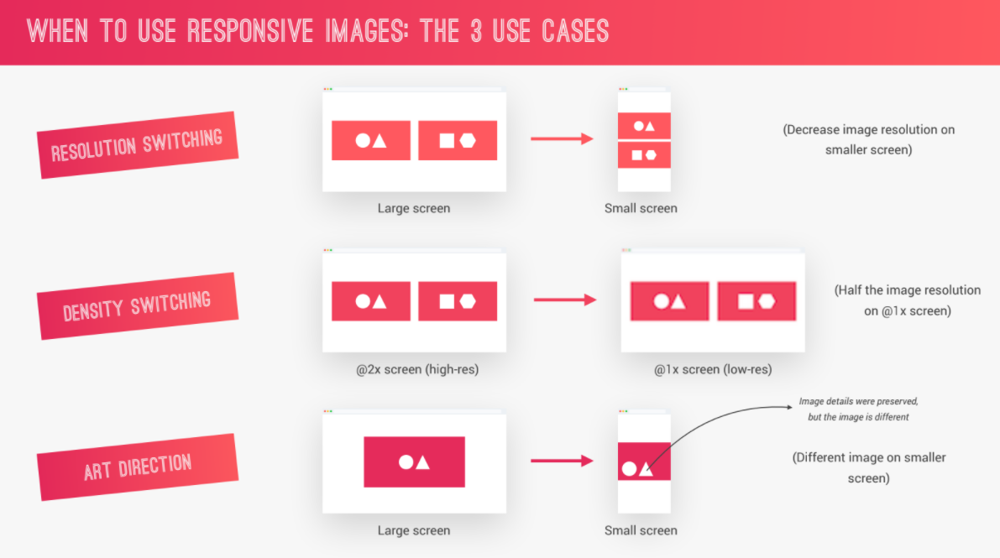
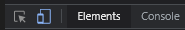
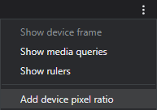
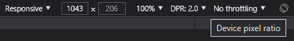
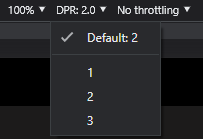
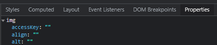
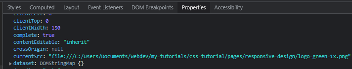

3 ways to use responsive images
There are more options for responsive imags in HTML than CSS.
Resolution switching
Server a different image size for different screen sizes.
Density switching
Choosing an image based off the pixel density of the screen.
Art Direction
Choosing a different image for different screen sizes.
Or keep the image, but remove parts of it.
Density Switching
Syntax: srcset - img - density descriptor
Change src attribute to srcset
Add image
Add a density descriptor (1x or 2x)
The following will allow the browser to use a different image depending on the screen density.
<img srcset="logo-green-1x.png 1x, logo-green-2x.png 2x" alt="">
Example
Art Direction (with Density Switching inside)
Use the picture element to switch between images based off the screen size.
Inside add a source tag with a srcset and media attribute.
In the srcset add the first image
In the media attribute create a CSS media query.
in this example, if the screen is smaller than 37.5em, the first images are used (depending on the screen desntiy).
If the screen is larger than 37.5em, the second srcset is used.
<picture>
<source srcset="logo-green-small-1x.png 1x, logo-green-small-2x.png 2x" alt="" media="(max-width: 37.5em)">
<img srcset="logo-green-1x.png 1x, logo-green-2x.png 2x" alt="">
</source>
</picture>
Example
Resolution Switching
Enable Device Pixel Ratio in Dev Tools.
This may not always be accurate
- Open Chrome's Dev Tools
- 
- Click the icon to enable Mobile viewing.
- 
- On the mobile screen, click the 3 dot icon on the top right
- Choose 'Add device pixel ratio'
- 
- You'll now see it's been added as an option to the top mobile toolbar
- 
- Select a density from the dropdown (1, 2, or 3)
- 
- Reload the page
- Inspect an image
- On the right of Dev Tools click the Properties tab
- Select img and you can confirm which image is being used
- 
- Scroll down to currentSrc to view which image is being used
How to write out the HTML
####
<!-- Resolution switching -->
<!-- Set width descriptor (by # of pixels) of each image -->
<!-- This informs the browser about the images without having to download them -->
<!-- sizes attribute informs browser of width of image at different viewport widths -->
<!-- the browser then decides which is the best image to use based off of viewport width and display resolution -->
<!-- Divide small image width by breakpoint width. -->
<!-- If image is 700px and breakpoint is 900px, 701/900 = .19 which is almost 20%. -->
<!-- You then use this to get the viewport width and add that to the right as 20vw -->
<!-- 171/600 breakpoint = 30% -->
<!-- add default size (300px) if no conditions apply set width to what's default in CSS for this element-->
<!-- finally include src in case user is using older browser that doesn't support srcset -->
<img srcset="img/nat-1.jpg 300w, img/nat-1-large.jpg 1000w"
sizes="(max-width: 56.25em) 20vw, (max-width: 37.5em) 30vw, 300px"
alt="photo 1" src="img/nat-1-large.jpg">
Responsive Images in CSS
Target 2x screens
You can target on viewport width or device resolution
Use a media-query with a min-resolution of 192dpi.
192dpi is the resolution of Apple's Retina screen.
.header {
height: 85vh;
background-image: linear-gradient(to right bottom,
rgba(126, 213, 111, 0.8),
rgba(40, 180, 133, 0.8)),
url(../img/hero-small.jpg);
background-size: cover;
background-position: top;
position: relative
}
@media (min-resolution: 192dpi) {
.header {
background-image: linear-gradient(to right bottom,
rgba(255, 185, 0, 0.8),
rgba(255, 119, 48, 0.8)),
url(../img/hero.jpg)
}
}Checking both resolution and screen size
When resolution is larger than 192dpi AND width is larger than 600px
This means the image will be used if the screen resolution is 192dpi or above (2x), or the width of the screen is above 600px
.header {
height: 85vh;
background-image: linear-gradient(to right bottom,
rgba(126, 213, 111, 0.8),
rgba(40, 180, 133, 0.8)),
url(../img/hero-small.jpg);
background-size: cover;
background-position: top;
position: relative
}
@media only screen and (min-width: 600px) {
.header {
background-image: linear-gradient(to right bottom,
rgba(255, 185, 0, 0.8),
rgba(255, 119, 48, 0.8)),
url(../img/hero.jpg)
}
}
Show image if one or another rule is true
This adds another rule for screens above 2000px
So the image will be applied in either case.
.header {
height: 85vh;
background-image: linear-gradient(to right bottom,
rgba(126, 213, 111, 0.8),
rgba(40, 180, 133, 0.8)),
url(../img/hero-small.jpg);
background-size: cover;
background-position: top;
position: relative
}
@media only screen and (min-width: 600px),
(min-width: 2000px) {
.header {
background-image: linear-gradient(to right bottom,
rgba(255, 185, 0, 0.8),
rgba(255, 119, 48, 0.8)),
url(../img/hero.jpg)
}
}Add Safari support
This adds another rule for screens above 2000px
So the image will be applied in either case.
.header {
height: 85vh;
background-image: linear-gradient(to right bottom,
rgba(126, 213, 111, 0.8),
rgba(40, 180, 133, 0.8)),
url(../img/hero-small.jpg);
background-size: cover;
background-position: top;
position: relative
}
/* This combines the two queries above with a comma
Add extra line because safari doesn't support min-resolution
-webkit-min-device-pixel-ratio should be at least 2 which is 2x */
@media only screen and (min-resolution: 192dpi) and (min-width: 600px),
only screen and (-webkit-min-device-pixel-ratio: 2) and (min-width: 600px),
only screen and (min-width: 2000px) {
background-image: linear-gradient(to right bottom,
rgba($color-secondary-light, 0.8),
rgba($color-secondary-dark, 0.8)),
url(../img/hero.jpg);
}